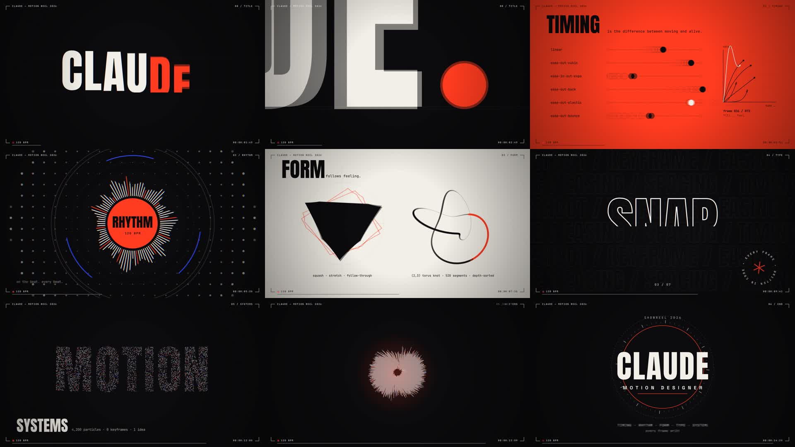

Motion Designer
点から始まり、点に還る。赤い点がひとつ現れ、線になり、画面を埋め、最後は4,200個の粒子が渦を巻いて再びひとつの点に戻る。120 BPMの拍に、すべてのカット・ヒット・トランジションを合わせた15秒。
| 0.0–1.2 | OPEN | 点が一度つぶれて（予備動作）、線に伸び、画面を塗る |
| 1.2–3.0 | TITLE | 「CLAUDE.」が1文字ずつせり上がり、ピリオドの中へズームして次へ |
| 3.0–5.0 | 01 TIMING | 6種類のイージングを、残像（オニオンスキン）とグラフで比較 |
| 5.0–7.0 | 02 RHYTHM | 拍に合わせて、波紋のドットと96本のスペクトラムが脈打つ |
| 7.0–9.0 | 03 FORM | 形が変わり続け、赤い輪郭が遅れて追う（フォロースルー）。右では3Dの結び目が回る |
| 9.0–11.0 | 04 TYPE | 8分音符ごとに7つの言葉。MOVE / BEND / SNAP / 動く / FLOW / 感じる / MAKE. |
| 11.0–13.0 | 05 SYSTEMS | 粒子が「MOTION」を作り、縮んで溜めてから爆発し、渦で1点に集まる |
| 13.0–15.0 | END | 点がリングになり、名前のカードへ。シャッターが閉じて終わる |

映像はHTML Canvasで「時刻tのとき画面はこう」という関数として書き、Playwright（Chromium）で1,800フレームを書き出して、ffmpegでMP4にまとめました。ソースは src/ と live.html にあります。制作はClaude Code。